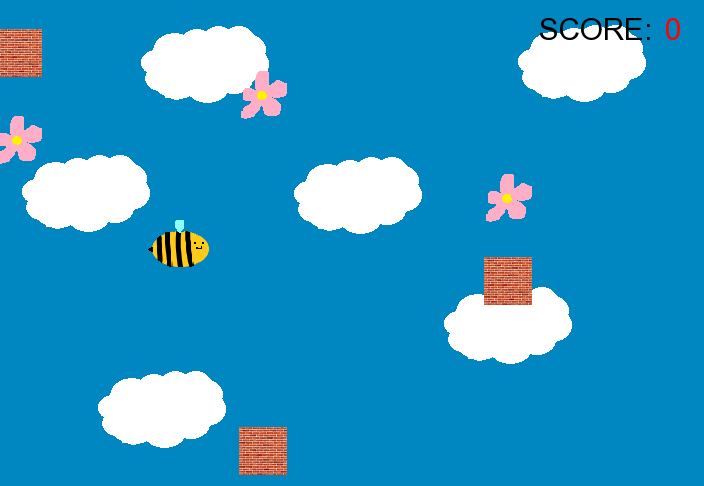
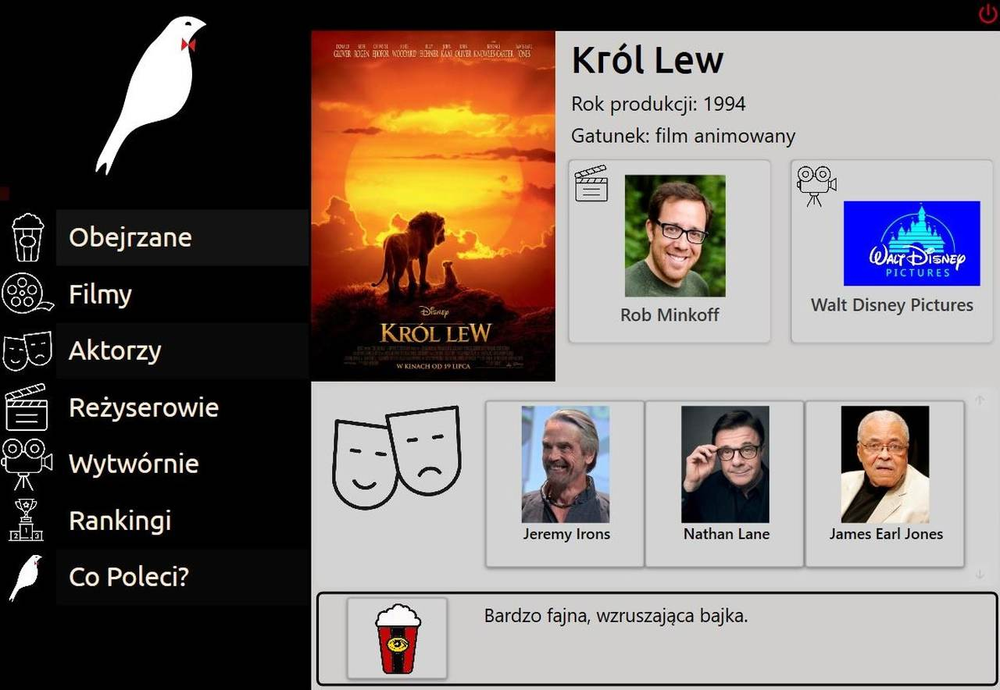

Nazywam się Tatiana Cieślar. Jestem studentką trzeciego roku Informatyki na Wydziale Matematyki Stosowanej. Moimi ulubionymi językami programowania są Python oraz C#, jednak najbardziej lubię projektować witryny internetowe. Stąd właśnie specjalizacją, którą wybrałam w tym semestrze, było Programowanie Internetu.
Aby dowiedzieć się więcej o moich projektach programistycznych i webowych, zachęcam do obejrzenia mojego profilu w witrynie GitHub, do którego link znajduje się powyżej, na pasku nawigacyjnym. Oto kilka zdjęć z projektów zrealizowanych przeze mnie samodzielnie lub w zespołach programistycznych:

